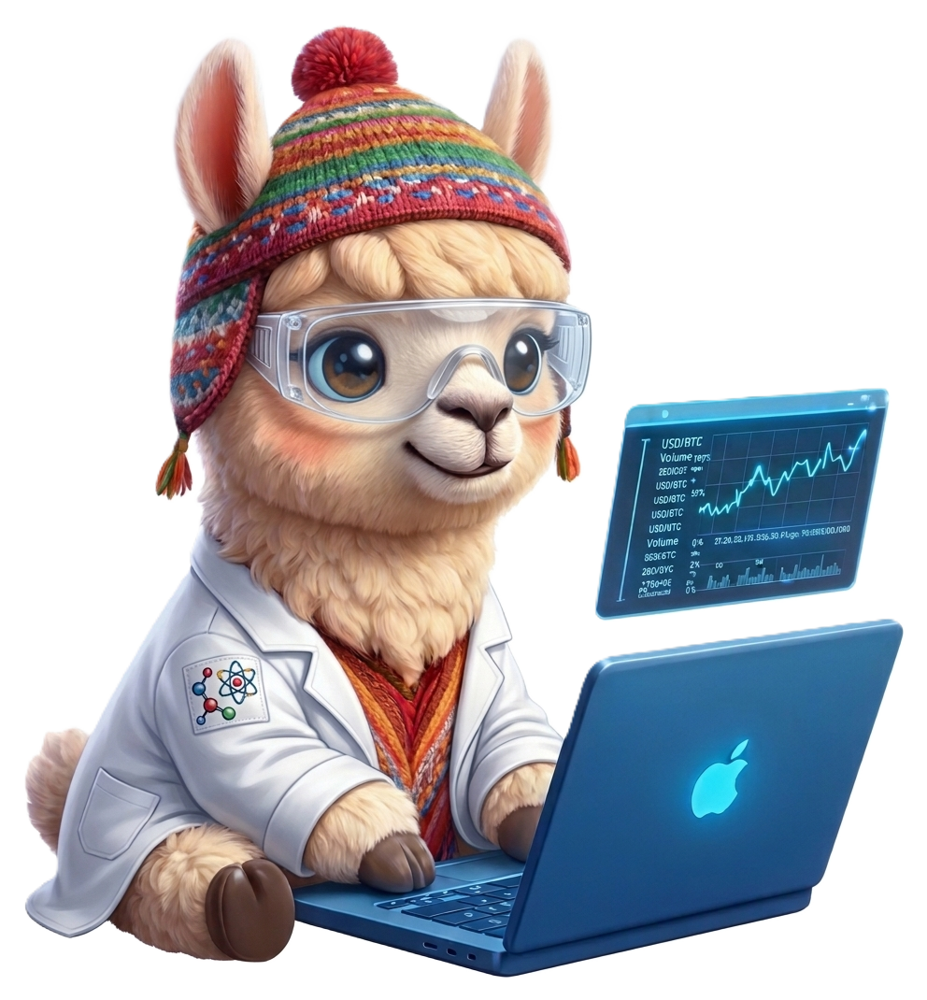
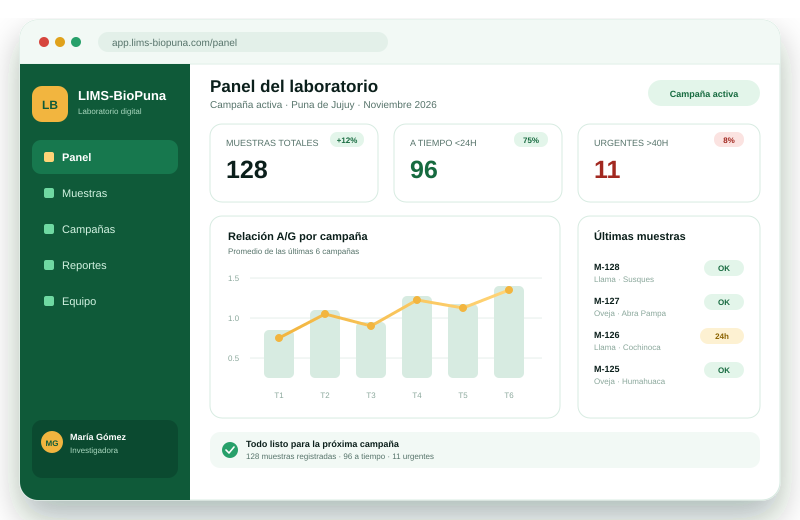

Muestras que se vencen
El suero se degrada pasadas las 48 horas desde la extracción y la muestra se pierde.
Análisis de electroforesis más rápido, seguro y trazable
Un sistema web para gestionar muestras de camélidos y ovinos de la Puna de Jujuy y leer las tiras de electroforesis con una foto, sin ácido acético al 80%.

Evaluar la salud de los rodeos de la Puna con electroforesis de proteínas era lento, riesgoso y difícil de seguir.
El suero se degrada pasadas las 48 horas desde la extracción y la muestra se pierde.
Perjudica la salud respiratoria de los investigadores y demora unas 3 horas cada 10 tiras.
Fotos y resultados se cargaban a mano en un equipo local, sin trazabilidad ni acceso compartido.
No había forma automática de calcular indicadores de salud poblacional.
LIMS-BioPuna reúne todo el flujo, desde la extracción en campo hasta el reporte para veterinarios y productores.
Calcula el tiempo desde la extracción y marca las muestras: a tiempo, atención o urgente. Bloquea las vencidas.
Procesa la foto de la tira tratada al 5% con Python y OpenCV. Entrega electroferograma, fracciones proteicas y relación A/G en segundos.
Campaña, productor, animal, imagen y resultado quedan vinculados. Acceso por roles de Investigador y Administrador.
Medias de relación A/G y comparativas entre temporadas por especie, localidad o productor.
Un flujo simple que conecta el campo, el laboratorio y la nube sin planillas sueltas.
Se registra el animal, el productor y la hora exacta de extracción desde el celular.
El sistema calcula las 48 horas de viabilidad y prioriza las muestras urgentes.
Una foto de la tira tratada al 5% se procesa con OpenCV y devuelve las fracciones proteicas.
El resultado queda trazable y disponible para comparar por especie, localidad o temporada.
Cada función está pensada para el trabajo real del laboratorio y el campo.
Reemplaza el revelado tóxico por una lectura digital de la tira tratada al 5%.
La foto se procesa con Python y OpenCV: electroferograma, fracciones y relación A/G.
Cada resultado queda vinculado a campaña, productor, animal y usuario.
Prioriza las muestras por tiempo de extracción y bloquea las vencidas.
Investigadores y administradores trabajan sobre los mismos datos, desde cualquier equipo.
Compará medias de A/G por especie, localidad, productor o temporada.
Cifras del prototipo presentado en la demostración.
Hasta 89% menos de tiempo operativo
Muestras analizadas con éxito
Registro completo y acceso multiusuario
“Queremos que cada muestra de la Puna se analice a tiempo, sin riesgos para el equipo y con datos disponibles para decidir mejor.”
Desarrollado en la Universidad Nacional de Jujuy junto al Laboratorio de Investigaciones Biofísico-Químicas de la Facultad de Ciencias Agrarias.

Entrá a la plataforma oficial y mirá cómo funciona con muestras reales.